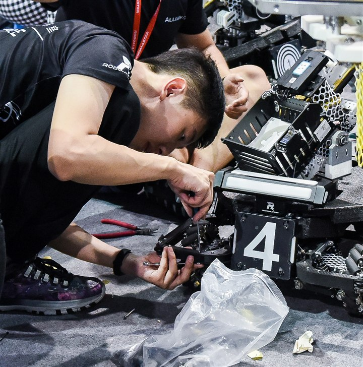
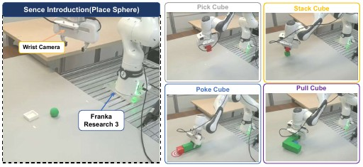
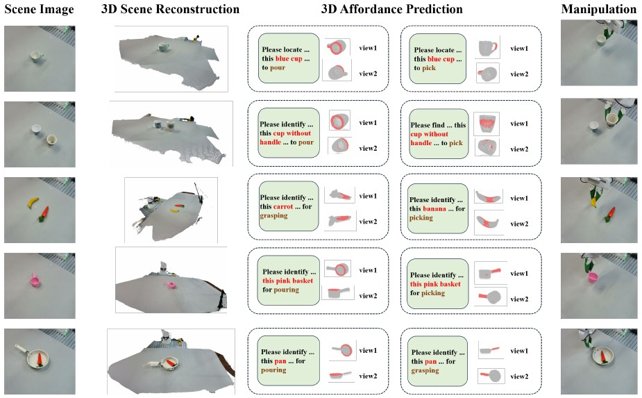
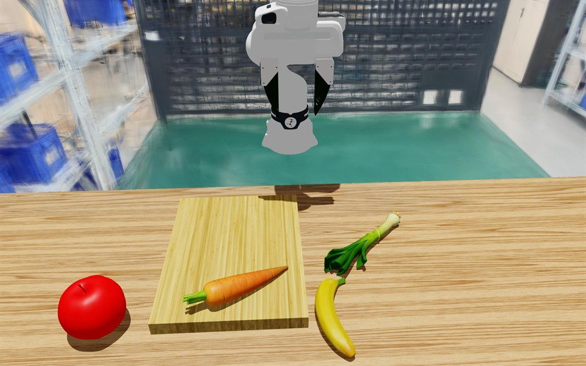

Haowen Sun
Xi’an Jiaotong University
I study how robots learn manipulation from limited demonstrations, identify where to interact with objects, and transfer skills from simulation to the real world.

Research
-
Few demonstrations Compositional world model Real-robot policy -

ICML 2026
QUEST
Uses model uncertainty to guide exploration and planning when a robot has few demonstrations and sparse rewards.
-

CoRL 2026
VoxAfford
Finds where a robot should interact with an object in a 3D point cloud from a natural-language description.
-

Publications
First- and co-first-author papers
-
ICML
Uncertainty-Guided Exploration and Stable Planning for Sparse-Reward Manipulation from Limited Demonstrations
QUEST uses uncertainty to guide exploration and stabilize model-based planning for sparse-reward robotic manipulation with few demonstrations.
-
IEEE Trans. Industrial Informatics
Constructing the World From Few Demonstrations: Learning Compositional World Models for Generalizable Robotic Skills
DeCoW builds a simulator from real scenes and learns rewards from trajectory similarity and a vision–language model to train policies for zero-shot sim-to-real transfer.
-
CoRL
VoxAfford: Multi-Scale Voxel-Token Fusion for Open-Vocabulary 3D Affordance Detection
VoxAfford fuses multiscale voxel features with language-model tokens to localize interaction regions in 3D point clouds from open-vocabulary prompts.
-
NeurIPS · Evaluations & Datasets
AffordSim: A Scalable Data Generator and Benchmark for Affordance-Aware Robotic Manipulation
AffordSim uses open-vocabulary 3D affordances to generate simulated manipulation trajectories from natural-language tasks and provides a 50-task benchmark.
-
arXiv preprint
PRISM: Projection-based Reward Integration for Scene-Aware Real-to-Sim-to-Real Transfer with Few Demonstrations
PRISM reconstructs simulation scenes from a few real demonstrations and uses vision–language supervision to learn a projection-based reward for real-to-sim-to-real transfer.
-
Image and Vision Computing
A dynamic keypoint selection network for 6DoF pose estimation
The network combines texture and geometry to select foreground keypoints dynamically and estimate an object’s six-degree-of-freedom pose from an RGB-D image.
Other publications
-
NeurIPS · Spotlight
OASIS: Observation-Action Space Alignment via SE(3) Trajectory Prediction for Robotic Manipulation
OASIS aligns visual observations with robot actions by predicting SE(3) end-effector trajectories in the camera frame.
-
CoRL
Phase-Conditioned Affordance Fields for SE(3)-Equivariant Visuomotor Policies
The policy uses phase-conditioned affordance fields to identify task-relevant 3D regions as manipulation progresses, while preserving SE(3) equivariance.
-
IEEE Trans. Automation Science and Engineering
DualSkill: Unifying Discrete Stability and Continuous Flexibility for Embodied Control
DualSkill combines discrete and continuous skill representations to support stable, adaptable embodied control.
-
CVPR
FlowRAM: Grounding Flow Matching Policy with Region-Aware Mamba Framework for Robotic Manipulation
FlowRAM focuses on task-relevant regions in 3D observations and uses a Mamba encoder with conditional flow matching to predict manipulation poses.
-
CVPR
PDFactor: Learning Tri-Perspective View Policy Diffusion Field for Multi-Task Robotic Manipulation
PDFactor encodes point clouds as three orthogonal feature planes and learns a diffusion field for six-degree-of-freedom actions across manipulation tasks.